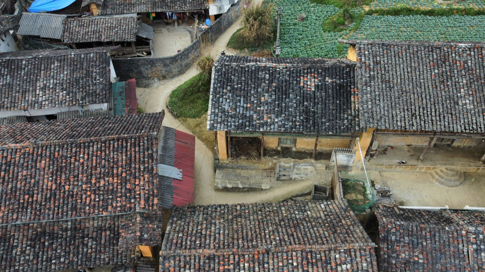

Delapan kelurahan di sekitar Ubud
Data seluruh rumah yang terhubung digabungkan per kelurahan. Pengelola kawasan memakai halaman ini untuk menemukan wilayah yang paling boros, lalu mengarahkan program hemat ke sana lebih dulu.
- 2.337rumah terhubung
- 8kelurahan
- 18program berjalan
Peta pemakaian per kelurahan
Semakin pekat warnanya, semakin besar rata-rata pemakaian listrik per rumah. Klik satu blok untuk melihat rinciannya.
Peliatan
- Rumah terhubung
- 412
- Listrik per rumah
- 243 kWh
- Air per rumah
- 18,1 m³
- Penghematan tahun ini
- 14,2%
- Program berjalan
- 3
Kelurahan ini berada di bawah rata-rata kawasan, sebagian besar karena program penggantian lampu yang berjalan sejak Juni.
Peringkat kelurahan
Diurutkan dari yang paling hemat. Klik judul kolom untuk mengurutkan ulang.
| # | Program | |||||
|---|---|---|---|---|---|---|
| 1 | Lodtunduh | 233 | 214 | 16,9 | 16,7% | 3 |
| 2 | Petulu | 186 | 228 | 17,4 | 9,4% | 1 |
| 3 | Mas | 264 | 237 | 18,7 | 12,9% | 2 |
| 4 | Peliatan kelurahanmu | 412 | 243 | 18,1 | 14,2% | 3 |
| 5 | Singakerta | 301 | 259 | 20,1 | 10,5% | 2 |
| 6 | Ubud | 508 | 271 | 19,6 | 11,8% | 4 |
| 7 | Sayan | 274 | 296 | 21,3 | 6,1% | 2 |
| 8 | Kedewatan | 159 | 318 | 22,8 | 4,3% | 1 |
Tren kawasan
Rata-rata pemakaian listrik per rumah di seluruh kawasan, dua belas bulan terakhir.
Penurunan mulai konsisten sejak Februari, bertepatan dengan program Ganti Lampu Serentak di Peliatan dan Mas.
Program hemat yang berjalan
Sasaran dihitung dari jumlah rumah yang memenuhi syarat, bukan dari seluruh rumah.
-
Ganti Lampu Serentak1.631 / 2.400
Peliatan & Mas · ditutup 30 Sep 2026 · 68% tercapai
-
Buru Bocor Kawasan74 / 180
Sayan & Kedewatan · ditutup 15 Okt 2026 · 41% tercapai
-
Atap Surya Bersama23 / 60
Ubud · ditutup 31 Des 2026 · 38% tercapai
Antrean verifikasi
Pengajuan warga yang menunggu keputusan pengelola kawasan. Setiap keputusan langsung mengubah antrean teknisi.
-
AJ-2615 Audit energi rumah Jl. Raya Pengosekan 42 · diajukan 30 Ags 2026
Tagihan naik 22 persen dalam dua bulan.
-
AJ-2617 Sensor air ultrasonik Br. Kalah, Peliatan · diajukan 30 Ags 2026
Curiga bocor, meteran terus berputar.
-
AJ-2618 Penggantian lampu LED Jl. Hanoman 8 · diajukan 29 Ags 2026
18 titik masih memakai lampu pijar.
-
AJ-2620 Servis dan isi ulang AC Br. Teges, Peliatan · diajukan 29 Ags 2026
Tiga unit belum diservis setahun.
Antrean bersih
Semua pengajuan sudah diputuskan. Pengajuan baru dari warga akan muncul di sini.